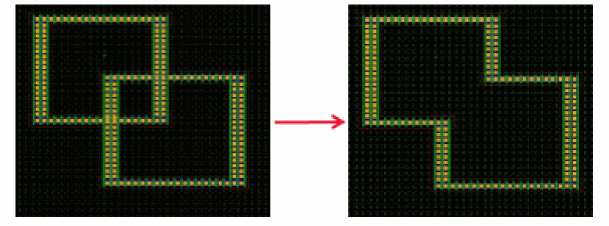

6
Write Customized Fluid Editing Commands
A fluid shape of a fluid guard ring (FGR) device can be visually edited by a design editing tool or layout editor. In Layout L, a fluid shape is selectable from the top level. Therefore, it supports editing features like any other level 0 shape.
The different editing features are implemented through SKILL functions declared and defined in the VFO infrastructure. These functions provide the layout editor with the information required to know about and be able to edit a fluid shape. Therefore, when you edit a fluid shape, the corresponding set of SKILL updater functions are called and you can see editing on the layout canvas alongside your actions.
As a PDK developer, you have the flexibility to customize fluid editing commands. These commands are defined and controlled by a user-specified protocol class derived from the base protocol class. The following methods are available for you to specify the supported edit operations for an FGR (that is, enable or disable an edit command) and to redefine the behavior of edit operations.
For syntactical details about these methods, refer to the section describing vfoAdvAlgClass in Chapter 2, “Fluid Guard Ring Infrastructure.” In case you are implementing fluid guard ring without pitch support, refer to the section describing vfoAbstractClass class in Chapter 2, “Fluid Guard Ring Infrastructure.”
Defining Fluid Editing Commands
To write customized fluid editing commands, do the following:
-
In a SKILL code file:
-
Define a user-defined protocol class that is extended from the base protocol class. For example, in the following code snippet,
sub1EditClasshas been extended fromvfoSfAdvImplClass.defclass( sub1EditClass (vfoSfAdvImplClass)
)
-
Override methods for each required fluid editing feature and declare with it an object of the user-defined protocol class. For example, the following enables chop operation and defines the chop behavior by overriding
vfoSupportsChop?andvfoChopInstancemethods:defmethod( vfoSupportsChop? ( ( obj sub1EditClass ) instId ) t
defmethod( vfoChopInstance ( ( obj sub1EditClass ) instId chopShapeData @rest args )
prog(()
<
define here the behavior of the chop command>))
-
Define a user-defined protocol class that is extended from the base protocol class. For example, in the following code snippet,
-
In the technology file:
-
Declare your user-defined protocol class in the
tcDeclareDeviceconstruct, as shown below.tcDeclareDevice( "layout" "cdsGuardRing" "NewDevice"
( (defComplementaryDevice "") (classVersion 1)
(enclosureClass "vfoSfEnclosureClass")
(vfoProtocolClass "sub1EditClass")
-
Set the user-defined protocol class as a property of
vfoProtocolClassin thetfcDefineDevicePropconstruct, as shown below.tfcDefineDeviceProp(
;(viewName deviceName propName propValue)
(layout NewDevice vfoProtocolClass "sub1EditClass")
)
-
Declare your user-defined protocol class in the
For more related details, refer to the
Pitch Handling Support for Editing Commands
Stretch Command
For the Stretch command, pitch handling support is available only for orthogonal shapes, rectangle, path, and polygon, of shapeType "path".
Pitch handling is supported if the following options are selected in the Stretch form:
During the Stretch command, when you drag the mouse, the fluid shape snaps to the nearest available grid, as shown in the figure below.
Merge Command
The pitch handling support is available for the Merge command only if all of the following conditions are true:
-
Ring-ring or path-path type shapes and
shapeTypeis path - Both instances have same net or either of them has a net
- The following parameters for both the instances are same for the same device type:
You can use the vfoGRCompareParams SKILL API to check other parameters, as shown in the example below:
defmethod(vfoGRCompareParams ((obj userGuardRingClass) inst1 inst2) if(vfoGetParam(inst1 “userParam”) == vfoGetParam(inst2 “userParam”) t nil) )
The results of the Merge command are illustrated below:
-
During the ring-ring merge, for the merge to the successful, the
shapeDataof different fluid guard ring instances should overlap even if centerlines do not overlap. Also, the resulting shape is determined by the outermost edges of the fluid guard ring instances being merged.
 -
During path-path merge, the centerline of fluid shapes should be aligned at path ends that are to be merged. Also, the merge operation can be done only at path ends.

For cases where no global or local grids are available in the layout canvas, there is no common snapping reference for different fluid guard ring instances. In such cases, the fin grids and poly lines of different FGR instances do not align with each other while placing the instances. When such instances are merged, the resulting fluid guard ring segment lengths are not pitch correct and result in alignment and DRC errors. In such cases, the VFO infrastructure automatically performs post-edit pitch correction, as shown in the figure below:
However, the minimum segment length requirements and inner corner spacing, which result in DRC errors, are not taken care during the post-edit pitch correction. You should use the Stretch command to correct the segment lengths.
Pitch Parameter Support in Edit Properties Form
The four pitch parameters, horizontalPitch, verticalPitch, horizontalSegWidth and verticalSegWidth, can be updated through the Edit Properties form. When you update these parameters, the shape data is also updated for the FGR instance.
vfoSetParam function does not guarantee that the instance will snap to pitches.Return to top